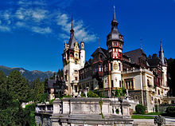

ISTORIC
Castelul Peleș din Sinaia, reședința de vară a regilor României, a fost construit la dorința regelui Carol I al României, după planurile arhitecților Johannes Schultz, Carol Benesch și Karel Liman, și a fost decorat de celebrii decoratori J. D. Heymann din Hamburg, August Bembé din Mainz și Bernhard Ludwig din Viena.

Castelul Peleș este unul dintre cele mai importante edificii de tip istoric din România, având caracter de unicat și este, prin valoarea sa istorică și artistică, unul din cele mai importante monumente de acest fel din Europa celei de-a doua jumătăți a secolului al XIX-lea.
Principele Carol I, ales domn al României în 1866, vizitează pentru prima dată Sinaia în luna august a acelui an, rămânând încântat de frumusețea respectivelor locuri. Pe vremea aceea, Sinaia era un mic sat de munte, numit Podul Neagului. Domnitorul hotărăște construirea unui castel într-un loc retras și pitoresc: Piatra Arsă. Câțiva ani mai târziu, în 1872, el cumpără terenul (1000 de pogoane), iar lucrările încep în 1873, sub conducerea arhitecților Johannes Schultz, Carol Benesch și Karel Liman. Mai întâi, lucrătorii au depus eforturi pentru a stăpâni elementele capricioase ale naturii, cum ar fi cursurile subterane de apă sau alunecările de teren.
Celor 300 de muncitori care au lucrat aici le-au trebuit doi ani pentru terminarea amenajărilor; în tot acest timp, domnitorul a supravegheat personal, în detaliu, lucrările. În 1875 se pune piatra de temelie a castelului, sub care sunt îngropate câteva zeci de monede de aur de 20 de lei, primele monede românești cu chipul lui Carol I.
În 1883 are loc inaugurarea oficială a Peleșului, pe care domnitorul l-a văzut ca pe un „sediu” al noii dinastii. Iar așezarea sa pe Valea Prahovei nu era întâmplătoare. Nu departe, la Predeal, era pe vremea aceea granița României cu Austro Ungaria. Dar, ulterior, după unirea Transilvaniei cu Vechiul Regat, castelul a ajuns să fie amplasat chiar în inima țării.
Peleșul a căpătat apoi o tot mai mare importanță, devenind reședința de vară a familiei regale române, care petrecea aici destul de multă vreme, de obicei din mai până în noiembrie. Aici s-au ținut importante întruniri politice, cum au fost Consiliile de Coroană din 1914 (când s-a hotărât neutralitatea României din primul război mondial, care tocmai începuse) și 1925.
Castelul a găzduit multe personalități ale vremii, scriitori, muzicieni, dar și regi și regine. Cea mai importantă vizită a fost aceea a bătrânului împărat al Austro-Ungariei, Franz Joseph, în 1896. Acesta a făcut o mulțime de fotografii cu acel prilej, fiind impresionat de frumusețea și bogăția castelului. În 1906 se aștepta o nouă vizită a împăratului, cu ocazia sărbătoririi a 40 de ani de domnie a regelui Carol I. Cu acest prilej a fost amenajat la castel apartamentul imperial, însă vizita lui Franz Joseph nu a mai avut loc.
Un calcul sumar arată că între 1875 și 1914 s-au cheltuit la Peleș peste 16 milioane de lei-aur.